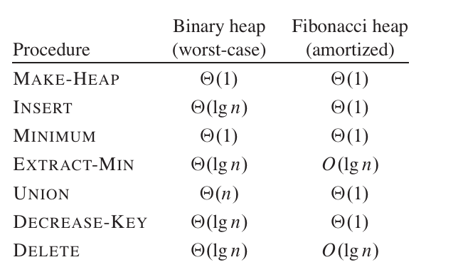
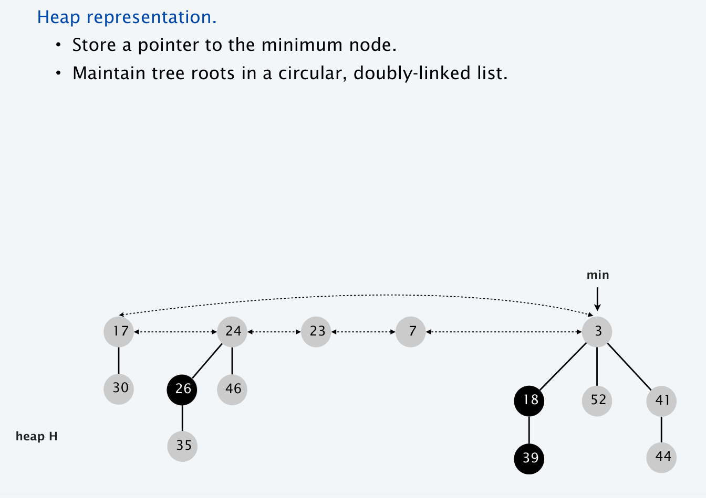
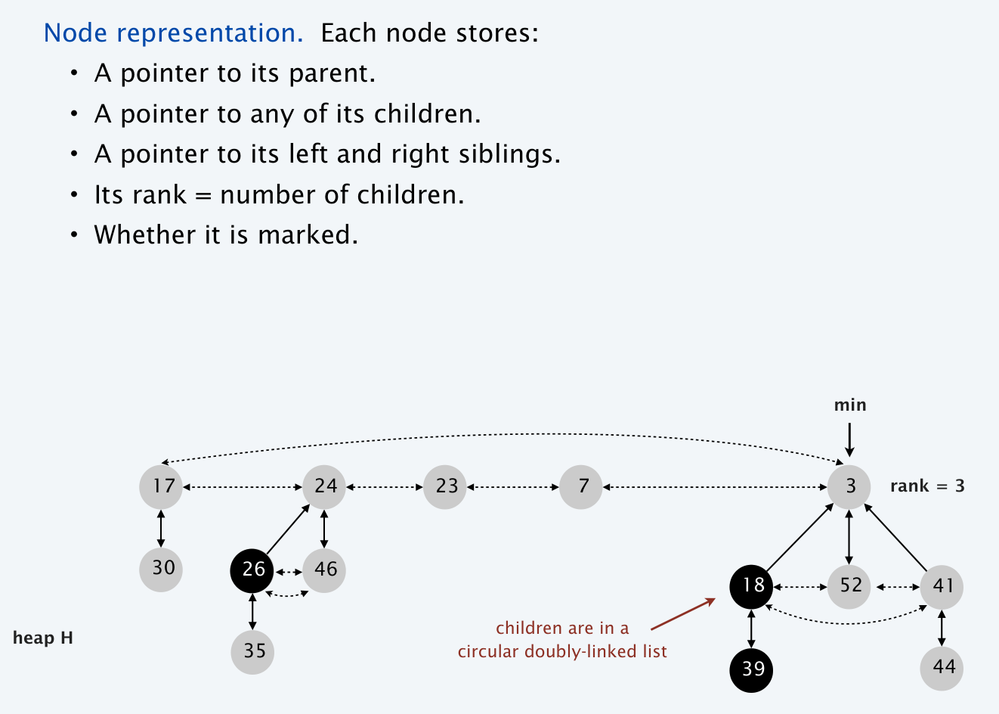
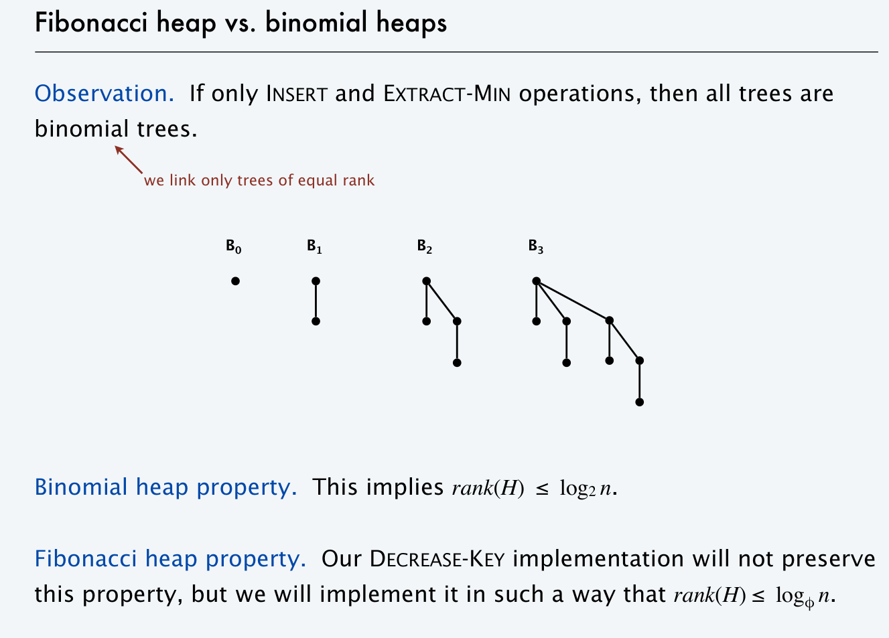

Chapter 5 | Binomial Queue & Fibonacci Heap
约 5219 个字 114 行代码 7 张图片 预计阅读时间 36 分钟
Binomial Queue
注
二项队列 (Binomial queue)，或者更多人把它叫做二项堆 (Binomial heap)，事实上个人认为和队列没有什么关系，因此在接下来的叙述中，我会使用二项堆这个名称而非二项队列，前者仅作为本篇笔记的标题使用
堆的其中一个应用就是优先队列。本节要介绍的二项堆 (Binomial Queue) 也是优先队列的一种实现，只不过不同于之前我们用一个堆维护优先队列，二项堆同时维护了具有不同特征的若干个。
link
Wikipedia: https://en.wikipedia.org/wiki/Binomial_heap
YouTube: https://www.youtube.com/watch?v=6JxvKfSV9Ns
Halifuda's Blog: https://www.cnblogs.com/halifuda/p/14380013.html
isshikih's notebook:https://note.isshikih.top/cour_note/D2CX_AdvancedDataStructure/Lec05/
Instruction
在学习 Binomial Queue 时，可以带着二进制的眼光进行学习
概述
二项堆是一种优先队列的实现方式。二叉堆作为基本的堆已经足够好，只是合并操作的复杂度不太能接受（单次 \(O(N)\)
而二项堆在这些操作上的时间复杂度与左斜堆非常类似：都有 \(O(logn)\) 的合并、删除、插入；\(O(n)\) 的建堆（队
贴一道 PTA 的题目
We can perform BuildHeap for leftist heaps by considering each element as a one-node leftist heap, placing all these heaps on a queue, and performing the following step: Until only one heap is on the queue, dequeue two heaps, merge them, and enqueue the result. Which one of the following statements is FALSE?
A.in the k-th run, \(\lceil N/2k \rceil\) leftist heaps are formed, each contains \(2k\) nodes
B.the worst case is when \(N=2K\) for some integer \(K\)
C.the time complexity \(T(N)=O(\frac{N}{2}log{2^0}+\frac{N}{2^2}log2^1+\frac{N}{2^3}log2^2+⋯+\frac{N}{2K}log2^{K−1})\) for some integer \(K\) so that \(N=2K\)
D.the worst case time complexity of this algorithm is \(Θ(NlogN)\)
--> D 选项错误，应该是 \(\Theta(N)\)，所以我们说左斜堆的建堆操作是可以达到 \(O(N)\) 的
定义
二项堆 (Binomial Queue)本质上是一系列二项树 (Binomial Tree)的集合。所以我们首先给定二项树 (Binomial Tree)的定义：
Binomial Tree
1、一个单结点可以作为二项树 \(B_0\)，其秩为 0；
2、二项树 \(B_k\) 的秩是 \(k\)，且是由两棵 \(B_{k−1}\) 合并而成的，其中一棵作为子树连接在另一棵的根上。
这样解释不太清楚，我们画出图来：
显然能够得到，二项树并非二叉树, 而二项树作为一种树，它的限制比较强，因此也有非常多十分好的性质。对于我们建构二项堆来说主要有以下几点：
1、二项树 \(B_k\) 由两棵 \(B_{k−1}\) 合并即可得来；
2、二项树 \(B_k\) 总共拥有 \(2^k\) 个结点；
3、二项树 \(B_k\) 的树根总共拥有 \(k\) 个子树，并且它们分别是二项树 \(B_0\),\(B_1\),...,\(B_{k−1}\)；
4、二项树 \(B_k\) 树根的高度是 \(k\)
这 4 条性质的证明就不赘述了，从图上可以轻易看出。另外二项树还有一个更有意思的性质：二项树 \(B_k\) 中，高度为 \(h\) 的结点共有 \(C_k^h = \binom{k}{h}\) 个。这个性质容易用数学归纳法证明
有了二项树的定义，我们就可以介绍二项堆了。
Binomial Queue
二项堆 (Binomial Queue)是一系列满足堆序的二项树 (Binomial Tree)的集合，其中每个二项树的阶数 \(k\) 都是不同的，反过来讲这句话，集合中 \(k\) 阶的二项树要么只有一个，要么没有。
譬如二项堆 \(Q\) 拥有 19 个结点，由于 19=(10011)2，从而 Q 就拥有（而且必然是）\(B_0\)、\(B_1\) 和 \(B_4\) 三棵二项树。如果不考虑树的顺序，那么只要结点数给定，二项堆的结构就已经被决定了。 进而，进而，一个有 \(N\) 个结点的二项堆，它的二项树的棵数就是 \(O(log \ N)\) 的。
🌰

题目实现的二项堆不一定有 min 指针！注意面向题面和选项判断实现。
实现
由于这种性质，我们可以用一个数组来存储二项堆的诸多二项树。用数组来存比链表要优越得多，因为数组可以明确地保存某棵二项树的秩，并且可以让我们立刻找到二项堆里的秩为 r 的二项树。用链表的唯一好处就是省略了之间不存在二项树的位置，但是对数组来讲，这只是一个 \(O(1)\) 的损耗。
刚刚已经提到，一棵二项树 \(B_k\) 树根的子树分别是二项树 \(B_0\) 到 \(B_{k−1}\)，这也明确地告诉我们，它的诸子树也算一个二项堆。不过，这个二项堆我们不需要快速找到每棵子树，而只需要在树根被删除时提取出来（下面会介绍到
并且由于每个二项树是一个多叉树，所以我们通常用 "Left child Next Sibling"( 左儿子右兄弟 ) 的方式来实现
下面是 C 语言版本的二项树和二项堆的声明
// C Implementation from cy's ppt
typedef struct BinNode *Position;
typedef struct Collection *BinQueue;
typedef struct BinNode *BinTree; /* missing from p.176 */
struct BinNode {
ElementType Element;
Position
LeftChild;
Position
NextSibling;
};
struct Collection {
int CurrentSize; /* total number of nodes */
BinTree TheTrees[ MaxTrees ];
};
操作
Merge
合并二项堆（Merge
将 \(Q1\) 和 \(Q2\) 合并成新队列。从新队列的第 0 棵二项树开始逐位考虑。对于第 i 棵二项树的临时数量来分类讨论，可能是两个队列都没有，而且也没有进位，这样新队列也没有这种二项树；也有可能是只有 \(Q1\) 拥有这种二项树，或者是只有 \(Q2\) 有，或者只是进位，总之只有一棵，则新队列只要继承这棵二项树即可；可能是有两棵，这样新队列没有这种二项树，而向下一位进位一棵合并后的二项树；可能是有三棵，这样任选其中一棵放在新队列里即可，剩余的两棵合并后进位。
可以看出，一次合并操作的时间复杂度是 \(O(logN_1+logN_2)=O(logN)\) 的。
为了保证这一点，两棵二项树的合并必须是 \(O(1)\) 的。由于刚刚提到，二项树是用链表存储的。一棵二项树只能并到另一棵同秩的二项树上，而且合并后，它必然是新树根的最大的子树（因为树根原本的子树都是更小的
merge
BinQueue Merge(BinQueue H1, BinQueue H2)
{
BinTree T1, T2, Carry = NULL;
int i, j;
if (H1->CurrentSize + H2->CurrentSize > Capacity)
ErrorMessage();
H1->CurrentSize += H2->CurrentSize;
for (i = 0, j = 1; j <= H1->CurrentSize; i++, j *= 2)
{
T1 = H1->TheTrees[i];T2 = H2->TheTrees[i]; /*current trees */
switch (4 * !!Carry + 2 * !!T2 + !!T1)/* assign each digit to a tree*/
{
case 0: /* 000 */
case 1: /* 001 */
break;
case 2: /* 010 */
H1->TheTrees[i] = T2;
H2->TheTrees[i] = NULL;
break;
case 4: /* 100 */
H1->TheTrees[i] = Carry;
Carry = NULL;
break;
case 3: /* 011 */
Carry = CombineTrees(T1, T2);
H1->TheTrees[i] = H2->TheTrees[i] = NULL;
break;
case 5: /* 101 */
Carry = CombineTrees(T1, Carry);
H1->TheTrees[i] = NULL;
break;
case 6: /* 110 */
Carry = CombineTrees(T2, Carry);
H2->TheTrees[i] = NULL;
break;
case 7: /* 111 */
H1->TheTrees[i] = Carry;
Carry = CombineTrees(T1, T2);
H2->TheTrees[i] = NULL;
break;
} /* end switch */
} /* end for-loop */
return H1;
}
其中 CombineTrees() 函数的定义如下：
BinTree CombineTrees( BinTree T1, BinTree T2 ) { /* merge equal-sized T1 and T2 */
if ( T1->Element > T2->Element )
/* attach the larger one to the smaller one */
return CombineTrees( T2, T1 );
/* insert T2 to the front of the children list of T1 */
T2->NextSibling = T1->LeftChild;
T1->LeftChild = T2;
return T1;
}
Insert
插入（Insert
Build
建立二项堆（Build
FindMin
找到堆顶（Find Min
DeleteMin
删除最小值（DeleteMin
DeleteMin
ElementType DeleteMin(BinQueue H) {
int i, j;
int MinTree; /* MinTree is the index of the tree with the minimum item */
BinQueue DeletedQUeue;
Position DeletedTree, OldRoot;
ElementType MinItem; /* the minimum item to be returned */
if(IsEmpty(H)) {
Error("Empty binomial queue");
return -Infinity;
}
MinItem = Infinity;
for (i = 0; i < MaxTrees; i++) { /* Step 1: find the minimum item */
if (H->TheTrees[i] &&
H->TheTrees[i]->Element < MinItem) {
/* Update minimum */
MinItem = H->TheTrees[i]->Element;
MinTree = i;
}/* end if */
} /* end for-i-loop */
DeletedTree = H->TheTrees[Mintree];
H->TheTrees[MinTree] = NULL: /* Step 2: remove the MinTree from H => H’ */
OldRoot = DEletedTree; /* Step 3.1: remove the root */
DeletedTree = DeletedTree->LeftChild;
free(OldRoot);
DeletedQueue = Initialize(); /* Step 3.2: create H” */
DeletedQueue->CurrentSize = (1 << MinTree) - 1 /* 2 ^ MinTree – 1 */
for (j = MinTree - 1; j >= 0; j--) {
DeletedQueue->TheTrees[j] = DeletedTree;
DeletedTree = DeletedTree->NextSibling;
DeletedQueue->TheTrees[j]->NextSibling = NULL:
} /* end for-j-loop */
H->CurrentSize -= DeletedQueue->CurrentSize + 1; /* DeletedQueue size + DeletedMin size(1) */
Merge(H,DeletedQueue);
return MinItem;
}
*DecreaseKey
对于 Binomial Queue 而言，如果给定了节点的位置，DecreaseKey 的时间复杂度是 \(O(logn)\)。但是我好像并没有找到相关的操作方法
摊还分析
这里我们解决前面提到的插入的摊还时间复杂度分析（或者说通过连续插入的方式建队的时间复杂度分析）
我们得出的结论如下：
A binomial queue of N elements can be built by N successive insertions in O(N) time.
Aggregate Proof
为了方便书写，我们用二进制的方式表示二项堆的建立过程 ( 假设这里只引入 \(B_0 \sim B_3\))
建立的过程如下：
0000 -> 0001 -> 0010 -> 0011 -> 0100 -> 0101 -> 0110 ->0111 ->
我们如果只考虑“进位”，对应了小树合并成大树的“指针连接”步骤，会发现建立大小为 N 的二项堆共 N 次插入中，导致第 0 位进位的概率是 1/2，第 1 位是 1/4，第 2 位是 1/8，...... 以此类推
可以计算 \(\text{Total Link} = N \cdot (1/2 + 1/4 + 1/8 +...) = O(N)\)
此外我们也可以在这个过程中发现，开销较大的插入会消除一些树，而开销较小的插入会增加一些树。而这就有一些摊还分析中势能法的感觉了，所以接下来我们也可以通过势能法来证明
Potential Proof
我们考虑用 \(Q\) 中二项树的棵数做位势函数 \(\Phi\), 假设单次插入花费的时间 \(T=k\)，\(k\) 也即进位的次数
显然任意时刻 \(\Phi\)>0，而二项堆未建立时 \(\Phi_0=0\)，从而这个位势函数的确指示了时间复杂度的一个上界
而若 \(T=k\), 则 \(\Delta\Phi = 1 - k\)，进而任一次插入的均摊时间 \(T^* = T + \Delta\Phi = k + (1-k) = 1\)
所以我们就证明了单次插入在均摊意义上的时间复杂度是 \(O(1)\)
建堆执行 N 次插入（也就是 N 次合并
加上前面得到的单次公式
得到：
进而建堆的均摊复杂度就是 \(O(N)\)
Fibonacci Heap
link
halifuda's blog:https://www.cnblogs.com/halifuda/p/14389799.html
概述
mergeable heap
@Introduction_to_Algorithms
A mergeable heap is any data structure that supports the following five operations,in which each element has a key:
MAKE-HEAP():creates and returns a new heap containing no elements.
INSERT(H,x):inserts element x, whose key has already been filled in, into heap H.
MINIMUM(H):returns a pointer to the element in heap H whose key is minimum.
EXTRACT-MIN(H):deletes the element from heap H whose key is minimum, returning a pointer to the element.
UNION(H1,H2):creates and returns a new heap that contains all the elements of heaps H1 and H2. Heaps H1 and H2 are “destroyed” by this operation.
In addition to the mergeable-heap operations above, Fibonacci heaps also support the following two operations:
DECREASE-KEY(H,x,k):assigns to element x within heap H the new key value k, which we assume to be no greater than its current key value.1
DELETE(H,x):deletes element x from heap H.

如上图可见，虽然 Fibonacci Heap 的实现很复杂，但是它在 Insert，Union，DecreaseKey 方面都有优势，当然这里对 Fibonacci heap 的时间复杂度分析都是摊还意义上的，并不是最坏情况的时间复杂度
我们已经知道，二叉堆和二项堆的 Decrease 操作都是 \(O(logN)\) 的，但某些时候我们会频繁地需要 Decrease，这就使我们期待一个更好的时间复杂度。斐波那契堆就是解决这个问题的一个经典办法。不过在介绍斐波那契堆之前，我们先来介绍两个操作，它们是斐波那契堆的灵感来源
左偏树的 Decrease
二叉堆和二项堆都可以用向上过滤来进行 Decrease，但左偏树不可以。因为左偏树只保证右路径的长度，它的左路径可以任意长，从而如果对一个左路径上的结点向上过滤，最坏的复杂度将是 O(N)。为了维持一个好的复杂度，左偏树用切除（Cut）来解决 Decrease 操作：
当 Decrease 操作应用于结点 \(X\) 时，如果它是树根则不需理会，否则将它从它的父亲 F 上切除，原树成为了两个树 \(T_X\) 和 \(T_F\)。显然，\(T_X\) 是一个左偏树，但是 \(T_F\) 已经不是了，我们需要对它做一些调整。我们知道，如果一个树的左右子树都是左偏树但它本身不是左偏树，那么它只需要交换左右子树，就可以成为左偏树。从而对 \(T_F\)，我们从 \(F\) 开始向上改造，只要祖先结点 \(A\) 不满足左偏树的性质，就交换它的左右子树。
这个向上改造显然不能一直改造到根，否则与向上过滤没有区别。实际上，我们只需要向上改造至多 \(logN\) 个结点即可。因为（即使经过了切除）\(T_F\) 的右路径总是不长于 \(logN\) 的 , 并且不难知道向上改造不合格结点的过程中，一遇到合格的结点就表明改造完成；当我们向上改造了 \(logN\) 个结点，最近的结点的 dist 就必然大于右路径长度，即整棵树最大的 dist, 于是我们就只需要改造至多 \(logN\) 个结点。
这样改造完之后，将 \(T_X\) 和 \(T_F\) Merge 即可。可见这一操作的复杂度是 \(O(logN)\)。
二项堆的懒合并
二项堆的合并是 \(O(logN)\) 的。实际上我们可以将它改造成 \(O(1)\)，只需要执行懒惰合并（Lazy Merge
可见，这样做有两个后果： 1、新队列不再满足二项堆的性质，这是懒惰合并的必然代价，我们称用上了懒惰合并的二项堆为懒惰二项堆。 2、多次合并之后，FindMin和DeleteMin的复杂度将不再是\(O(logN)\)。
对于第二个后果，我们没有直接的解决办法，但我们可以改造 FindMin 及 DeleteMin 的操作，使得它们的摊还复杂度还是能保持普通二项堆的 \(O(logN)\)。改进方法如下：
遍历所有二项树，找到最小元素将其删除。随后我们需要将懒惰二项堆转变为标准的二项堆，即通过合并二项树，使得集合中不存在高度相同的两棵二项树（这里的时间复杂度证明比较复杂，主要是我有点看不懂，暂略）
所以，简单来说，懒惰合并的主要思想是只有当两个二项堆真正需要合并时 ( 即删除最小元素后 ) 才进行合并
有了前面两个操作为基础，我们就来介绍斐波那契堆。对于堆的经典操作，除了 FindMin 和 ExtractMin 是 \(O(logN)\) 的，其余的操作斐波那契堆都以 \(O(1)\) 完成。
定义
从设计的思维来讲，斐波那契堆就是“懒惰二项堆 + 左偏树切除”
Fibonachi Heap
1、它是一些满足堆序的树的森林；
2、森林里的树并不是二项树，但是它们的合并还遵循二项树的法则：将键值更大的树作为键值更小的树的子树，而且只有秩相同时，两棵树才能合并。我们不妨叫这种树为“斐波那契树”，后面会看到这种命名的意义；
3、斐波那契堆通过级联切除 (Cascading Cut) 和懒惰合并 (Lazy Merge) 维持均摊复杂度
这里给出两幅图片方便理解斐波那契堆的结构


操作
Merge
斐波那契堆的合并也是懒惰合并，时间复杂度自然是 \(O(1)\)
Insert
直接看作是特殊的 Merge 即可
DecreaseKey
这一操作遵循级联切除。级联切除是这样应用的：
首先，如同左偏树一样，一个被 Decrease 的结点需要从它的父节点切除，然后直接进入斐波那契树森林中。
之后，对于它的父亲 F：如果此前 F 没有被切除子树过，那么就给 F 打上标记 #；如果 F 曾经被切除过子树（这时它一定有标记 # 了
直接进入森林，但是标记 # 需要去掉：森林里的任何根结点都不能标上标记 #（因为它们没法再被切除了
对于 F 的父亲，也同样地检查和操作，即若 F 被切除时父亲已经有标记 #，则也要切除父亲，直到不需要再切除或到根节点为止。
可以看到这和左偏树的向上改造有些类似，都是向上对祖先的检查。正因此，这一操作的时间复杂度没法直接保证，后面和 DeleteMin 一起，我们介绍它的摊还复杂度。
DeleteMin/FindMin
类似懒惰二项堆。同样，复杂度仍需要摊还分析。在进行摊还分析之前，我们先来介绍两个引理：
引理 1
一棵斐波那契树 \(X\) 的第 \(i\) 年轻的子树 \(C\) 的秩至少是 \(i−2\)。其中第 \(i\) 年轻表示它是第 \(i\) 个被并入的，秩即子树棵数
证明
由于斐波那契树的合并也需要遵循同秩的原则，因此当 \(C\) 并入 \(X\) 时，由于 \(X\) 已经有了至少 \(i−1\)、至多 \(i\) 棵子树，从而 C 的秩至少是 \(i−1\)。从此之后，C 只能被切除子树 1 次，否则它将会被从 \(X\) 切除，从而就不会是 \(X\) 的儿子了，因此 C 的秩至少是 \(i−2\)。定理得证。
引理 2
引理 1 是引理 2 的引理：一棵秩为 \(R\) 的斐波那契树 \(X\)，它的大小至少是 \(F_{R+1}\)，其中 \(Fi\) 指斐波那契数列第 \(i\) 项。
证明
我们设 SR 是秩为 R 的斐波那契树大小的最小值。显然，S0=1、S1=2。对于 SR，它一定有 R 棵子树，从而有第 1,2,...,R 年轻的子树。由于引理 1，它一定有秩（至少）为 0,1,...,R−2 的子树，注意这里只枚举了第 2-R 项，所以它还有一棵大小至少为 1 的子树，算上树根，因此有
并且它的首项为 \(S_0=1,S_1=2\)，这个引理正是斐波那契堆的命名来源
下面我们就可以来开始分析 DecreaseKey 和 DeleteMin 的摊还复杂度：
摊还分析
我们将位势函数定义为 \(\Phi = T + 2L\)，其中 T 是树的棵数，L 是标记数。容易看到 \(\Phi_0 = 0\)，并且任意时刻 \(\Phi\) 非负，因此位势函数可以应用。
DecreaseKey 分析
假设级联切除总共切除了 \(c\) 次。每一次都增加了一棵树；除了第一次和最后一次，每一次都消去一个标记；最后一次大概率会增加一个标记（除非遇到了根节点
计算上切除时间 \(c\)，从而摊还时间为 \(T^* = c+\Delta\Phi \leq c+-c+2 = 2 = O(1)\), 那么累加后显然摊还复杂度为 \(O(1)\)
DeleteMin 分析
这里挪用了算法导论的分析
我们假设 \(rank(H)\) 表示 \(H\) 中秩的最大值，\(trees(H)\) 表示 \(H\) 中树的棵树
那么实际的开销：\(c_i = O(rank(H)) + O(trees(H))\)
- \(O(rank(H))\) 用于将 \(Min\) 树的孩子合并到 root list 中
- \(O(rank(H)) + O(trees(H))\) 用于查找并且更新 \(Min\) 指针
- \(O(rank(H)) + O(trees(H))\) 用于合并调整森林
势能的变化：\(\Delta\Phi \leq rank(H') + 1 - trees(H)\)
- 没有节点被标记
- \(trees(H') \leq rank(H') + 1 \Leftarrow \text{no two trees have same rank after consolidation}\)
摊还开销：\(O(logn)\)
- \(\hat{c_i} = c_i + \Delta \Phi = O(rank(H)) + O(rank(H'))\)
- The rank of a Fibonacci heap with n elements is \(O(logn) \Leftarrow \text{Fibonacci Lemma2}\)
